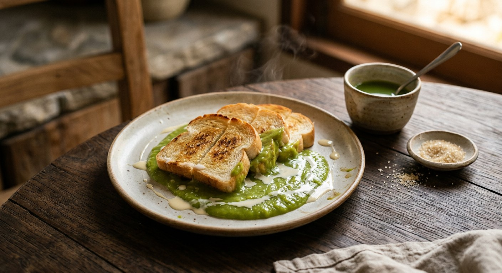

Bread toasted golden — or steamed until it collapses soft — dipped into a bowl of warm green pandan custard and drizzled with evaporated milk. Thailand's sweetest argument for keeping a loaf in the house.

ขนมปังสังขยา is two things and one idea: bread, and sangkaya, the Thai coconut-egg custard — sweet, rich and usually pandan-green. SGE Thai calls it the snack no one ever gets bored of, eaten with bread or patongko, the fried dough sticks. The green comes from pandan leaves, not colouring: Wongnai's cook describes the family original as sangkaya tinted green with pandan cut from the garden behind the house, and her pandan recipe insists on real pandan water — "ไม่ใส่สีผสมอาหาร", no food colouring.
The dish has three forms, all sold at the same morning markets. The café form is toast: bread fried in a dry pan until golden, served with a cup of warm custard and a drizzle of evaporated milk — Wongnai's ขนมปังสังขยาใบเตย. The old-shop form is steamed bread: thick slices cut bite-size and steamed soft, eaten beside the custard bowl — the same Wongnai cook's egg-custard version, and SGE Thai's butterfly-pea custard served with steamed bread. And the market form is a filled bun: TrueID's seller recipe bakes soft rolls, pierces them and pipes the custard in until it overflows — the version you buy at fairs, wrapped in plastic.
There is also a doctrinal split over the custard itself. Aroifin is explicit: the ancient recipe thickens with eggs alone — no flour, no starch — while what it calls the "normal" modern sangkaya adds corn starch. Both appear below; both are served the same way, with bread and evaporated milk.
| Thai | English | Amount |
|---|---|---|
| ขนมปังหั่น | Bread, sliced | 4 slices |
| น้ำใบเตย | Pandan water | 1 cup |
| นมสด | Fresh milk | 1½ cups |
| น้ำตาลทราย | Sugar | ¼ cup |
| นมข้นหวาน | Sweetened condensed milk | ¼ cup |
| เกลือ | Salt | ½ tsp |
| แป้งข้าวโพด | Corn starch | ¼ cup |
| ไข่ไก่ | Eggs | 2 |
| นมข้นจืด | Evaporated milk, for drizzling | to taste |
The ancient flourless bowl (Aroifin, by mimi): 2 eggs, 1 cup fresh milk (or coconut milk), ¾ cup sugar, 2 tsp concentrated pandan water (pandan leaves blended with a little water and strained), 1 tsp vanilla (optional), ¼ cup evaporated milk plus more for the top — thickened by egg alone, no starch, ~25 minutes, 4 servings. The double-boiled egg custard (Wongnai, น้องหลุมดำ): 2 duck eggs, 80 g palm sugar, 40 g brown sugar, 250 ml coconut milk, 50 ml evaporated milk, 30 g corn starch, cooked over boiling water for ~20 minutes — a soft-orange custard served with steamed bread. The filled-bun batch (TrueID, แม่ซี น้องมดดี้): a full bread dough (440 g bread flour, milk, yeast, 100 g sugar, 50 g butter) proofed, baked at 150°C with the fan on for 10–15 minutes, then piped with pandan custard (150 ml pandan water from 7 leaves, 3 eggs, 150 ml milk, 300 ml head coconut milk, 4½ tbsp corn starch, 225 g sugar, 60 g butter) until it overflows.
Flour or no flour. Aroifin — and Kapook's and SGE Thai's pandan versions — thicken the classic sangkaya with eggs alone, and Aroifin spells the difference out: the ancient recipe (สูตรโบราณ) is 100% flourless, the "normal" one adds corn starch. Wongnai's pandan custard, its egg custard and TrueID's filling all use corn starch. The flourless version is looser and sweeter; the starch version sets firmer and travels.
Toasted or steamed bread. Wongnai's pandan recipe toasts the bread in a dry pan; its egg-custard recipe steams the bread bite-size until hot; SGE Thai serves its butterfly-pea custard with steamed bread or patongko. Toast is the café habit, steamed bread the old-shop habit — both are correct, neither is universal.
Double-boiled or direct heat. The egg custards — Wongnai's and Kapook's — are double-boiled (ตุ๋น) over simmering water for 15–20 minutes, with Kapook insisting the custard be stirred in one direction only. The pandan custards cook directly in a pot over low-to-medium heat, adding the evaporated milk partway through and stirring until it thickens again.
Duck eggs or chicken eggs. Wongnai's egg custard is built on two duck eggs with palm sugar and brown sugar, for the colour and the egg aroma. Every pandan version uses chicken eggs and white sugar. The green custard and the orange custard are treated as different dishes that share a name.
Dip or filled bun. The plate-and-dip form serves the custard in a cup or bowl beside the bread. TrueID's market recipe bakes the bread as buns and pipes the custard inside until it overflows — same two ingredients, sold as a completely different product. SGE Thai's page name-checks the third: patongko, the fried dough, dipped the same way.
This recipe is translated from the following Thai-language sources. Where they disagree, we've said so.
1. Wongnai — "วิธีทำ 'ขนมปังสังขยาใบเตย' เมนูง่าย ๆ ทำกินก็ได้ ทำขายก็ปัง" (the toast recipe used here) — wongnai.com
2. Wongnai — "วิธีทำ 'ขนมปังสังขยาไข่' เมนูขนมไทยหวานละมุน เนื้อเนียนจิ้มกินเพลิน!" by น้องหลุมดำ (the double-boiled egg custard and the steamed bread) — wongnai.com
3. Aroifin — "วิธีทำ สังขยาใบเตย สูตรโบราณ หวานมันเข้มข้น ไร้แป้ง 100%" by mimi (the flourless ancient recipe and the flour-vs-egg distinction) — aroifin.com
4. Kapook — "6 วิธีทำสังขยา จิ้มขนมปังสูตรใช้นมสด หวานหอมอร่อย" (the one-direction stirring rule and the tempered-yolk egg custard) — cooking.kapook.com
5. TrueID Food — "วิธีทำ ขนมปังสังขยาใบเตย สูตรทำขาย แป้งนุ่มข้ามวัน ไส้หวานละมุน" by แม่ซี น้องมดดี้ (the filled-bun market batch) — food.trueid.net
6. SGE Thai — "วิธีทำสังขยา จิ้มขนมปังร้อน ๆ หวานหอม ทานอร่อย" (the patongko and steamed-bread servings, and the butterfly-pea variant) — sgethai.com